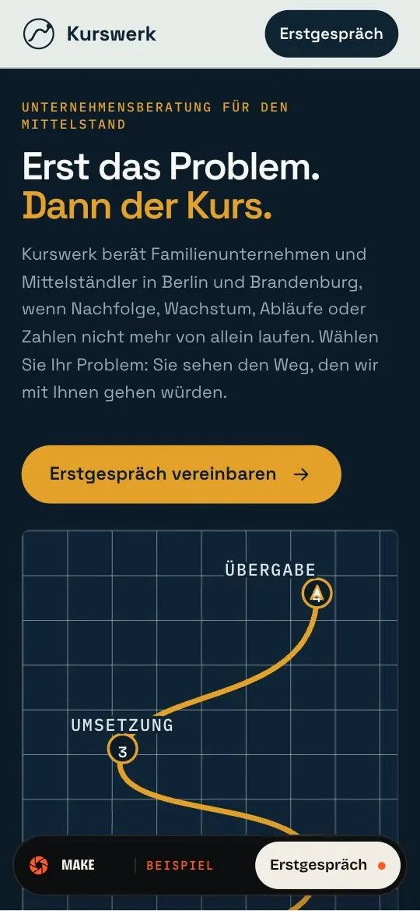

Beispiel · erfundener Betrieb
Website für Berater erstellen lassen: die Beispielseite Kurswerk Beratung
Wer eine Beratung sucht, will wissen, ob sie sein Problem kennt. Wenn Sie als Unternehmensberater oder Beraterin eine Website erstellen lassen möchten, zeigt diese Beispielseite für einen erfundenen Betrieb, wie die Seite beim Problem beginnt und zum Erstgespräch führt.
Eine Beratung für inhabergeführte Betriebe und Mittelstand, die beim Problem beginnt: Auf einer Seekarte wählt man Nachfolge, Wachstum, Abläufe oder Zahlen, eine Kurslinie zeigt den Weg, und ein kurzer Check sagt, ob ein Gespräch lohnt.

Welche Aufgabe löst die Seite?
Wer eine Beratung sucht, hat ein Problem und kennt den Fachbegriff dafür oft nicht. Die Seite beginnt beim Problem: Besucher wählen Nachfolge, Wachstum, Abläufe oder Zahlen und sehen den Weg, die Ergebnisse und ob sich ein Gespräch lohnt.
Was enthält die Seite?
- Seekarte
- Problem zuerst
- Kurz-Check
Nachtblau mit Seekarten-Raster und Bernstein, gesetzt in einer Grotesk mit Mono-Beschriftungen. Schon der erste Bildschirm ist die Seekarte: Man wählt sein Problem, eine Kurslinie zieht sich über die gezeichnete Karte, und ein Kurz-Check bewertet drei Aussagen. Es folgen die Leistungen als Verzeichnis, drei Phasen mit festem Preis, erfundene Beispielfälle, Team, Fragen und die Anfrage für ein Erstgespräch.
Wie jede unserer Seiten ist sie zuerst für das Handy gestaltet und lädt schnell.
Für wen passt so eine Seite?
Für Unternehmensberatungen, Steuerberater und andere Dienstleister, deren Angebot erklärungsbedürftig ist und die Anfragen von Menschen bekommen wollen, die ihr Problem schon benennen können.
Häufige Fragen zur Website für Berater
Wie zeigt eine Beratung, dass sie beim Problem anfängt und nicht beim Angebot?
Indem die Seite beim Problem beginnt. Auf der Beispielseite Kurswerk wählt der Besucher sein Problem, und eine Kurslinie zeigt den Weg über eine gezeichnete Karte.
Wie kann ein Besucher einschätzen, ob ein Gespräch sich lohnt?
Mit einem kurzen Check. Die Beispielseite bewertet drei Aussagen und sagt ehrlich, ob ein Erstgespräch jetzt sinnvoll ist.
Wie lassen sich Fälle darstellen, wenn Kunden nicht genannt werden dürfen?
Die Beispielseite arbeitet mit erfundenen Beispielfällen und sagt das offen. Echte Fälle zeigen wir nur mit Einverständnis der Kunden und Ihrer Freigabe.
Wie wird das Honorar erklärt?
Als drei Phasen mit festem Preis je Phase. Die Beispielseite nennt dafür keine Zahlen. Ihre Preise legen Sie fest.
Was zeigt die Seite über das Team?
Die Menschen, die beraten, mit Haltung und Werdegang. Wo Porträts fehlen, bleibt die Stelle offen. Wir erfinden keine Personen und keine Auszeichnungen.
Wie entsteht Ihre eigene Seite?
In sechs Schritten: Briefing, Design, Feedback, Umsetzung, Abnahme, Live. Sie sehen den Entwurf, bevor wir bauen, und online geht die Seite erst mit Ihrem Okay. Zum Ablauf
Websites gibt es ab 2.990 € netto, einmalig. Alle Preise finden Sie bei MAKE Innovation: Alle Preise. Mehr zu Video und Reels und zu Social Media steht auf der Startseite.
Stand: November 2026